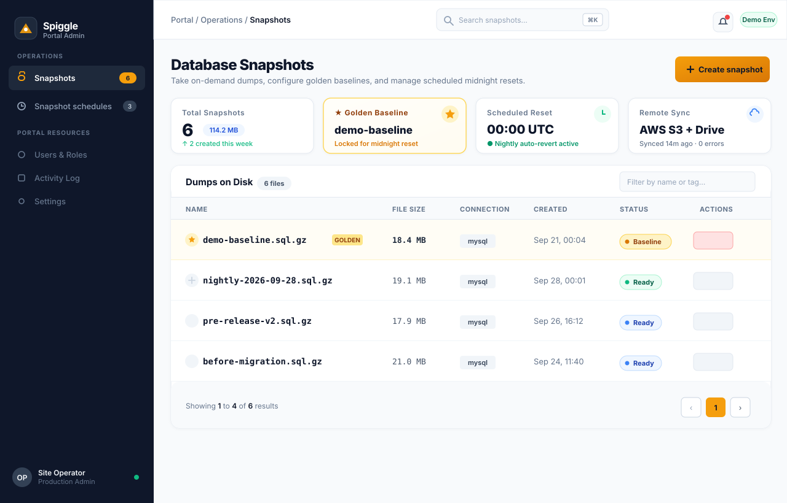
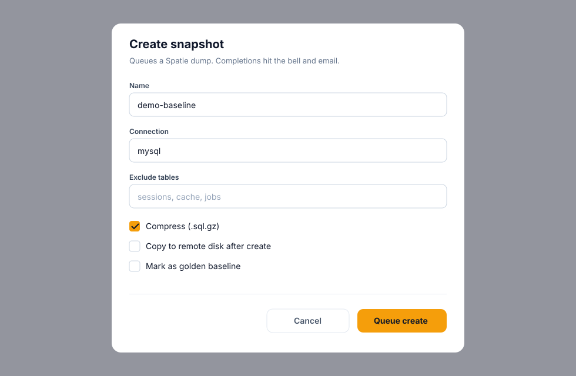
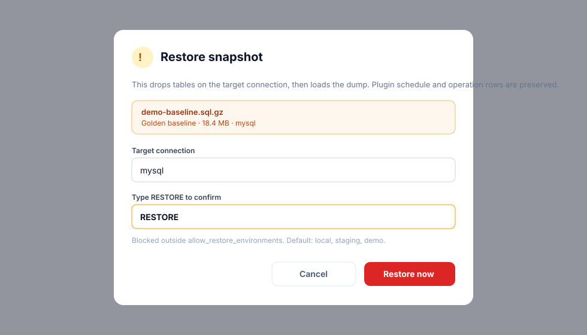
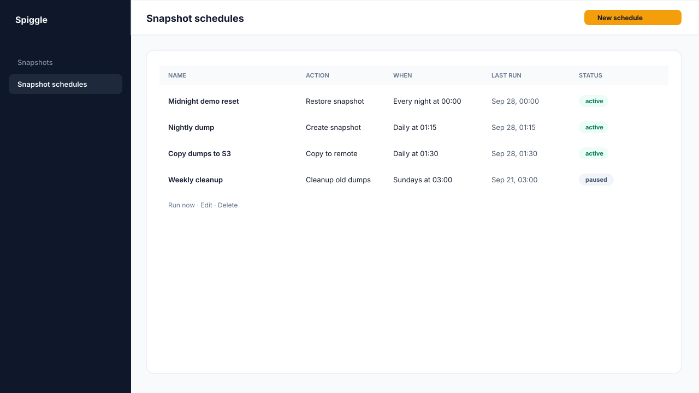
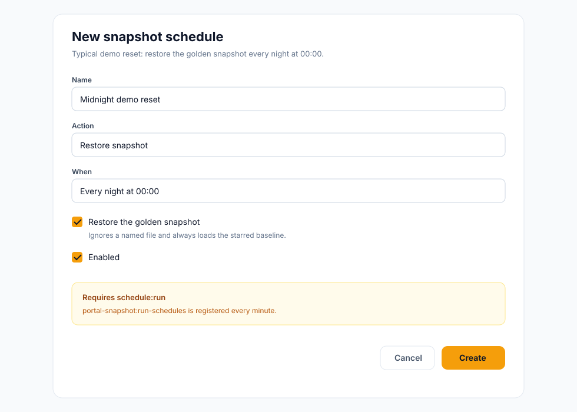
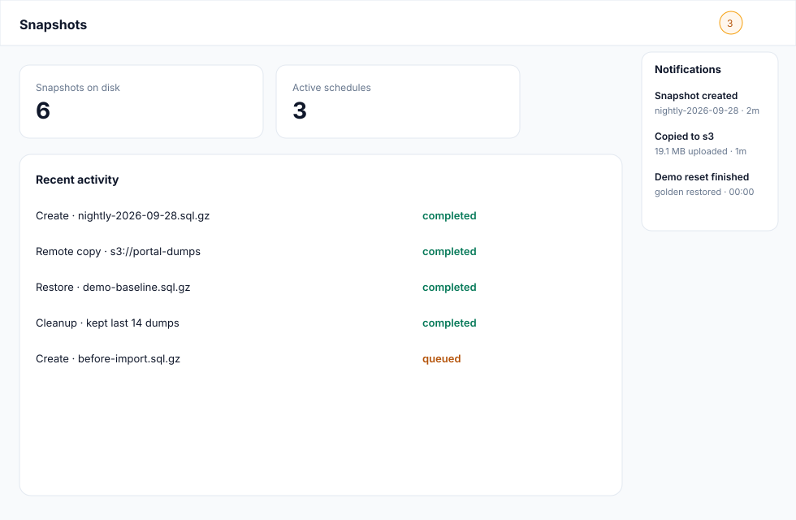

Create on demand
Name a dump, pick a connection, optionally limit or exclude tables, and compress to .sql.gz. Work runs on a queue.
Create, export, copy to Drive or S3, and restore database dumps without leaving Filament. Schedule ongoing backups or revert a demo site to a golden baseline at 00:00.

Built on spatie/laravel-db-snapshots. The plugin adds a Filament UI, schedules, safety rails, notifications, and remote copies.
Name a dump, pick a connection, optionally limit or exclude tables, and compress to .sql.gz. Work runs on a queue.
Type RESTORE before tables drop. Restores are blocked outside allowed environments so production stays safe by default.
Star one snapshot as the known-good demo state. Nightly schedules can always load that file while newer dumps keep accumulating.
Create, restore, remote-copy, or clean up on midnight, daily, hourly, weekly, every six hours, or a custom cron.
Download a dump from the table. Copy to any Laravel disk — S3, GCS, SFTP, or Google Drive via Flysystem.
Completions land in the Filament notification bell and a queued email. Mail fails silently if it is not configured.
Schedule and operation rows are preserved across a restore so the plugin does not wipe its own history.
Every create, restore, export, cleanup, and remote copy is recorded with status, actor, and a short message.
Snapshots list, create and restore modals, schedules, the midnight demo-reset form, and the notification bell.





The reason this plugin exists: a public demo that visitors can break, then a known-good database at midnight.
When the portal looks right, create a snapshot named demo-baseline and mark it golden.
Action: restore. When: every night at 00:00. Turn on “Restore the golden snapshot”.
Laravel’s schedule calls portal-snapshot:run-schedules every minute. Failures hit the bell and email.
Source lives in a private repo. Require it from GitHub, publish config + migrations, and register the plugin on the panel.
Authorize whoever may dump or restore. Navigation group and sort are optional.
FilamentPortalSnapshotPlugin::make()
->authorize(fn () => auth()->user()?->is_admin ?? false)
->navigationGroup('Portal')
snapshots disk in config/filesystems.php.* * * * * php artisan schedule:run.It wraps Spatie database snapshots in a Filament page and a schedules resource. Operators can create, download, copy remotely, delete, and restore dumps — and schedule those same actions, including a nightly demo reset.
Filament 4 and 5. PHP 8.2+. Laravel 11, 12, or 13.
Not by default. Configure allow_restore_environments. The restore action also requires typing a confirmation phrase.
The queued email is skipped and logged at debug. The Filament bell still fires when database notifications are enabled.
Point filament-portal-snapshot.remote.disks at existing Laravel filesystem disks. The plugin copies the dump file; it does not invent a Drive driver.
No. This is database snapshots (SQL dumps) via spatie/laravel-db-snapshots, not full application backups.
Four sidebar layouts, six palettes, light and dark mode, and a live Theme Settings page.
View Spiggle Theme →Material Design chrome for Filament v5 — Theme Settings, notifications, and search.
View Material Theme →Public forms, submissions inbox, and CSV export.
View Form Builder →EAV custom fields for any Eloquent model, with a Filament UI.
View Dynamic Fields →Portal Snapshot is a private package. Get in touch for access, or for a custom Filament plugin built around your portal.